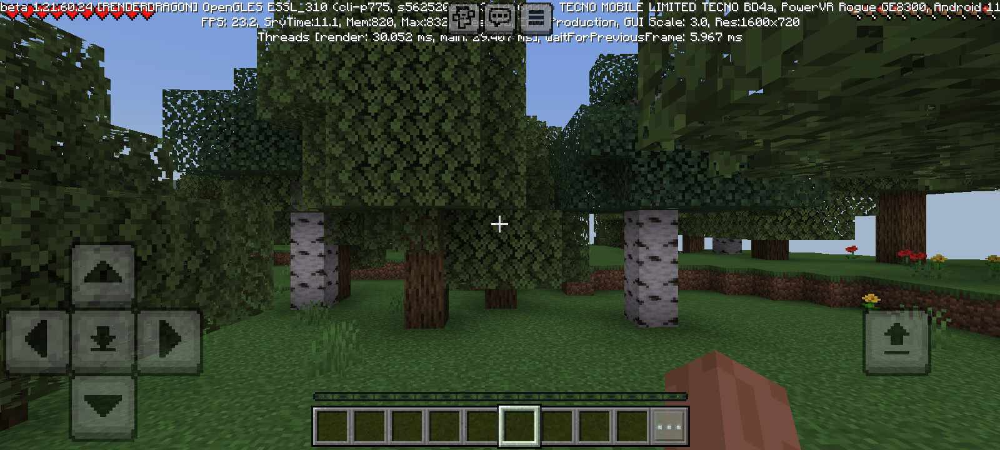
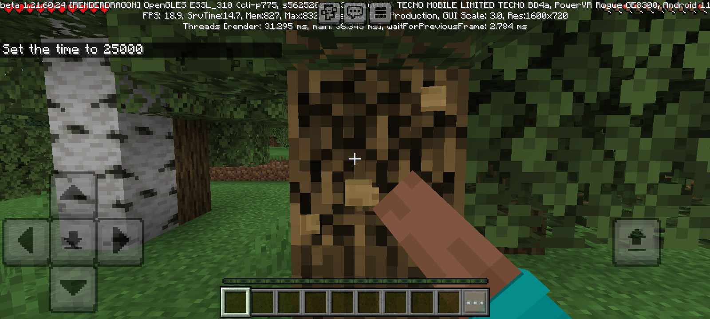
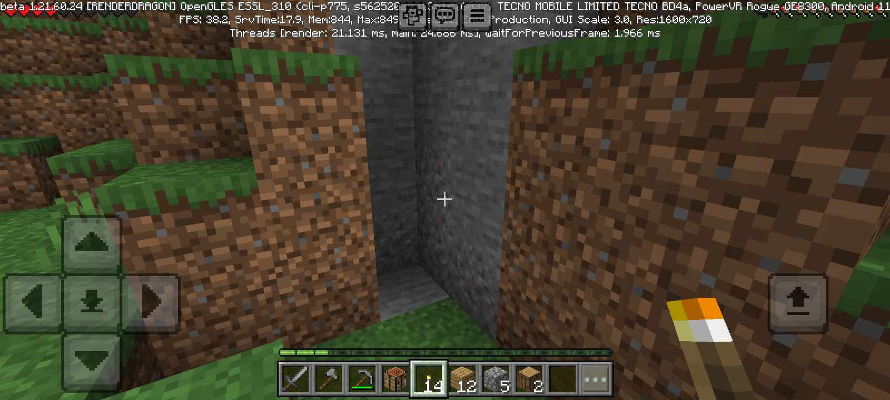
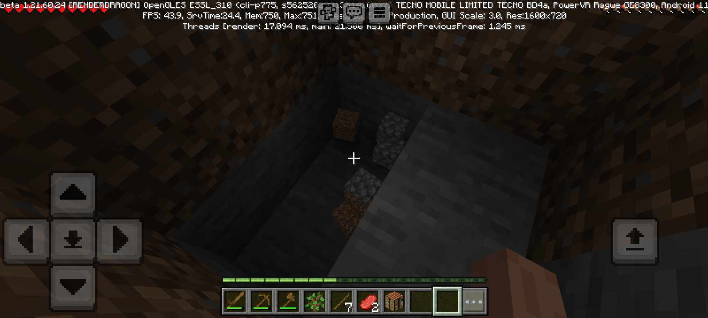
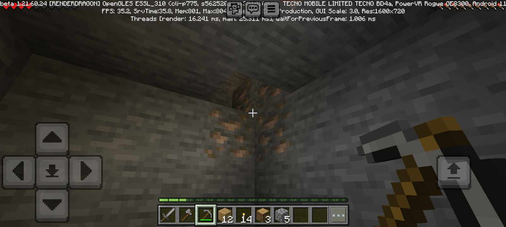
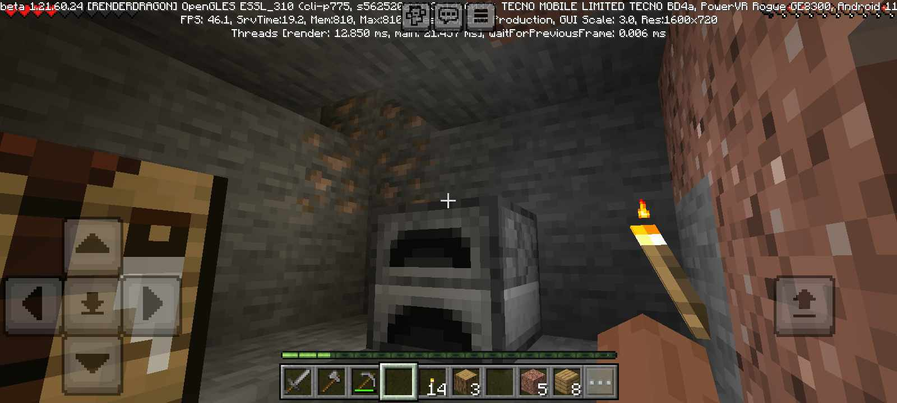
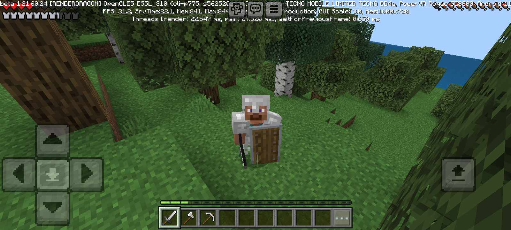

Once a new world is started it is very recommended for new players to quickly start getting the starting resources like, Wood in order for the player to start CRAFTING (check the basic crafting menu for details), and once the player has crafted the basics(like a crafting table, and wooden tools) EX. a Wooden pickaxe, sword and Axe.
 Now if the player has gotten all those basic starting things, they can now move on to the next phase of the game, which I like to call as, (the start of the grinding phase). You can now either start killing some mobs(the animal types) for food, or start getting cobblestone(you can get this by mining stone with the pickaxe you crafter earlier(you can find stone by digging down deep enough or by finding stone just lying around (as shown in the picture below)
 

Now if you already found some stone to mine, you can now start making a furnace(which can be used for smelting and cooking) and, stone tools, (which is also shown in the basic crafting menu at the home page),
Now after making your stone tools you can now dispose of your wooden tools(I prefer using them as fuel for the furnace as to maximize the efficiency).Anyways now that you are already with stone tools, you can now find nearby caves and start exploring them for needed materials, like iron, and coal ores, you can also find some rare stuff inside the caves like, monster spawners, and abandoned mineshafts which both contain valuable loot, and also dangers like hostilemobs
Now once the player has gotten the necessary materials like iron, they can now start crafting iron equipment, like tools and iron armor.

The player can also craft a SHIELD(crafting shown in the basic crafting menu), from iron, which blocks damage projectiles, and explosions. It can also block swords and other direct attacks by players.
So by now the player should already have decent tools and armor (like iron tools, a shield, and iron armor), all this just basically means that the player has done the basics of the game, now all the player has to do is to continue the game and have fun, while also discovering some secrets along the way.
Well I guess that's all for the starting basics, btw be sure to check the other menu's for other info about stuff
Back to home:
To Home